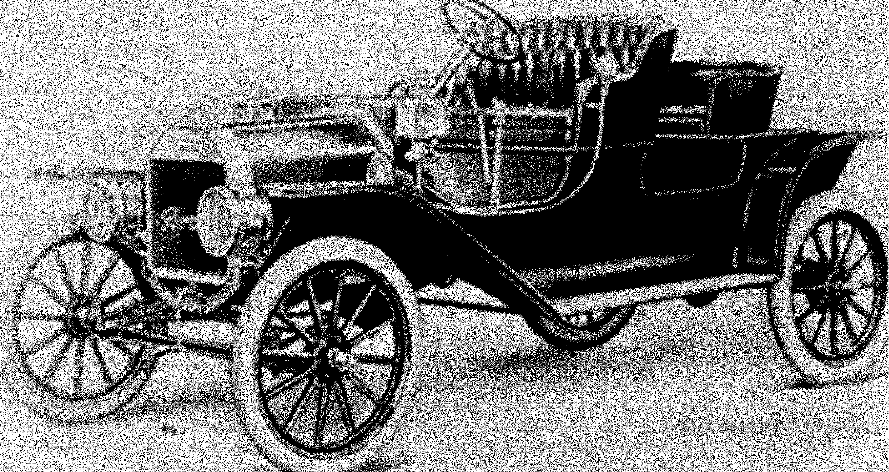
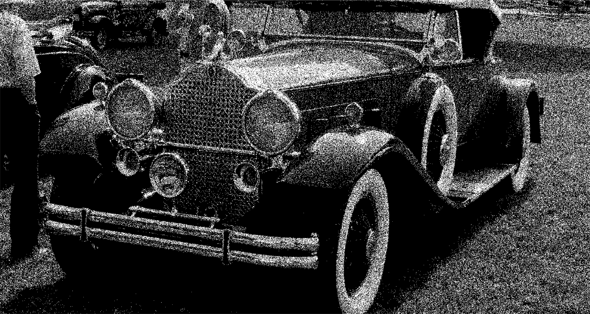
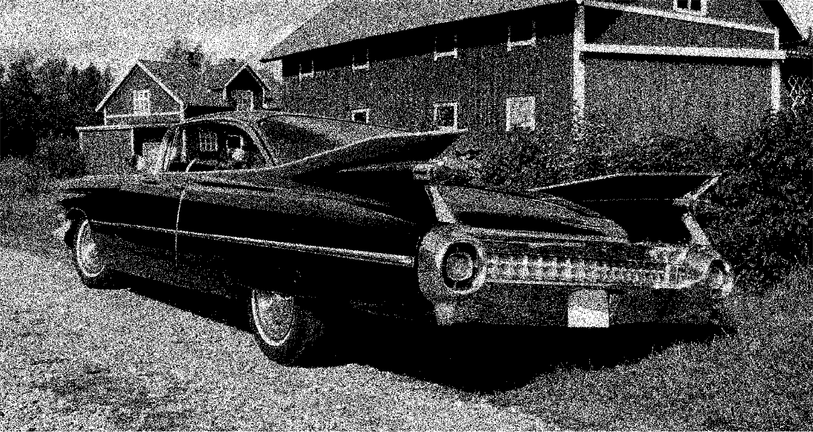
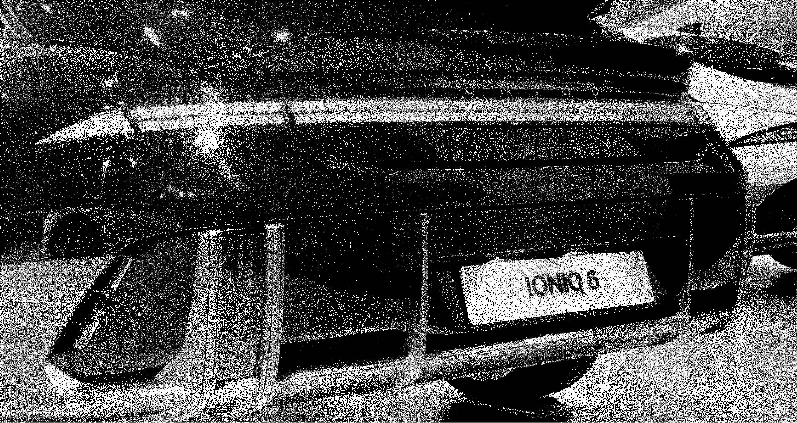

1908

Exposed structure forms the front edge; a standardised bumper bar is not yet visually established.
Fig. 1. Ford Model T (Unknown, 1908).As bumpers became integrated into the vehicle body, the physical boundary became less visually distinct. This visual system makes that hidden edge visible again, helping drivers understand where the vehicle actually ends.

Exposed structure forms the front edge; a standardised bumper bar is not yet visually established.
Fig. 1. Ford Model T (Unknown, 1908).
A separate horizontal chrome bar makes the protective boundary visibly distinct from the body.
Fig. 2. Packard DeLuxe Eight 745 Roadster (Foskett, 2006).
The bumper becomes both ornament and regulated protection—larger, brighter and culturally prominent.
Fig. 3. Cadillac Series 62 (Liftarn, 2006).
The bumper fascia merges with the body while cameras and sensors move boundary information into digital systems.
Fig. 4. Hyundai IONIQ 6 rear view (Oh, 2022).Five Asian EVs create visibly different proportions for testing one visual system. This is a curated research sample—not a vehicle ranking.
Official dimensions
3,395 × 1,475 mm
Illustrative silhouette checked against a top-view CAD block and model-specific 3D reference.
Research question
This project explores repeated rear dents as a relationship between vehicle form, parking environments and driver understanding. Four EV drivers were interviewed; responses were coded into Background, Experience, Problems and Important Quotes, then clustered through affinity mapping.
This is an exploratory visual communication prototype, not a collision-warning or parking-safety tool. Dimensions differ by market, model year and grade. Clearance assumes a centred vehicle and excludes mirrors unless a source states otherwise. The project does not claim to show direct-vision blind zones, camera fields of view or sensor detection envelopes.
3D CAD Browser (no date) Hyundai IONIQ 6 3D model. Available at: https://www.3dcadbrowser.com/3d-model/hyundai-ioniq-6 (Accessed: 6 August 2026).
3DModels.org (no date a) Kia EV3 with HQ interior 2025 3D model. Available at: https://3dmodels.org/3d-models/kia-ev3-with-hq-interior-2024/ (Accessed: 6 August 2026).
3DModels.org (no date b) Nissan Sakura 2025 3D model. Available at: https://3dmodels.org/3d-models/nissan-sakura-2023/ (Accessed: 6 August 2026).
3DModels.org (no date c) XPeng X9 2026 3D model. Available at: https://3dmodels.org/3d-models/xpeng-x9-2025/ (Accessed: 6 August 2026).
CarCadBlocks (no date) Nissan Sakura 2023 free CAD blocks, DWG file. Available at: https://carcadblocks.com/nissan-sakura (Accessed: 6 August 2026).
Foskett, S. (2006) 1930 Packard Sport Phaeton [Photograph]. Available at: https://commons.wikimedia.org/wiki/File:1930_Packard_sport_phaeton.JPG (Accessed: 5 August 2026).
Giang Trần (2024) Vinfast VF9 model (no interior) [3D model]. Available at: https://sketchfab.com/3d-models/vinfast-vf9-model-no-interior-cac6cb95b9084d0abee37dccb46fa10b (Accessed: 6 August 2026).
Hyundai Motor Europe (no date) IONIQ 6: Technical data & downloads. Available at: https://www.hyundai.com/eu/en/models/ioniq-6/technical-data-downloads.html (Accessed: 6 August 2026).
Hyundai Motor Nederland (no date) Hyundai IONIQ 6: Design ontmoet efficiëntie. Available at: https://stage-aem.hyundai.com/nl/nl/modellen/ioniq-6.html (Accessed: 6 August 2026).
International Organization for Standardization (2022) ISO 4513:2022 Road vehicles — Visibility — Method for establishment of eyellipses for driver’s eye location. Available at: https://www.iso.org/standard/72001.html (Accessed: 6 August 2026).
International Organization for Standardization (2023) ISO 17386:2023 Intelligent transport systems — Manoeuvring aids for low-speed operation (MALSO) — Performance requirements and test procedures. Available at: https://www.iso.org/standard/82952.html (Accessed: 6 August 2026).
Kia Global Media Center (no date) Kia EV3. Available at: https://www.kianewscenter.com/images-and-videos/image/kia-ev3/a/acdb5e4e-dd80-48a9-be5a-567577b17ce7 (Accessed: 6 August 2026).
Kia UK (no date) The Kia EV3 specifications. Available at: https://www.kia.com/uk/new-cars/ev3/specification/ (Accessed: 6 August 2026).
Liftarn (2006) Cadillac-1959-rear [Photograph]. Available at: https://commons.wikimedia.org/wiki/File:Cadillac-1959-rear.jpg (Accessed: 5 August 2026).
Nissan Motor Co., Ltd. (2022) Nissan Sakura specifications. Available at: https://history.nissan.co.jp/ARCHIVES/PDF/SAKURA/KE0/20220520/sakura_specsheet.pdf (Accessed: 6 August 2026).
Oh, D.B. (2022) Hyundai IONIQ 6 CE Abyss Black Pearl (14) [Photograph]. Available at: https://commons.wikimedia.org/wiki/File:Hyundai_IONIQ_6_CE_Abyss_Black_Pearl_(14).jpg (Accessed: 5 August 2026).
United Nations Economic Commission for Europe (2021) UN Regulation No. 158 — Devices for means of rear visibility or detection. Available at: https://unece.org/transport/documents/2021/07/standards/un-regulation-no-158-devices-means-rear-visibility-or-0 (Accessed: 6 August 2026).
Unknown (1908) Ford Model T fra 1908 [Photograph]. Available at: https://commons.wikimedia.org/wiki/File:Ford_Model_T_fra_1908.jpg (Accessed: 5 August 2026).
Vehicle Boundary Visual System (2026) ‘EV-driver interview study’, UAL MA Graphic Design, unpublished primary research.
VinFast (no date a) Câu hỏi thường gặp về xe ô tô điện VinFast VF 9. Available at: https://vinfastauto.com/vn_vi/cau-hoi-thuong-gap/cau-hoi-xe-o-to/san-pham/vf-9 (Accessed: 6 August 2026).
VinFast (no date b) VinFast VF 9 EV — A premium choice for enjoyment. Available at: https://shop.vinfastauto.com/vn_en/dat-coc-xe-vf9.html (Accessed: 6 August 2026).
XPeng (2026) 2026款小鹏X9 参数配置表 [2026 XPeng X9 specification table]. Available at: https://www.xiaopeng.com/x9_2026/configuration.html?forcePlat=h5 (Accessed: 6 August 2026).
XPeng Malaysia (no date) XPENG X9. Available at: https://www.xpeng.com.my/x9.php (Accessed: 6 August 2026).